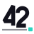

Brand guidelines
One-page reference · Version 1.0 · November 2026
Logo


Clear space
x is the width of the teal cursor. Keep at least 2x clear on every side. Inside the lockup, the gap between the 42 and “Coding Labs” is also 2x.
Minimum size

Mark · 10 mm · 32 pxUse the logo mark as the logo. Everywhere else, write the name in full as plain text: 42 Coding Labs. Never “42CL”, “42 Labs” or “Coding Labs” alone. The number 42 is also used by the École 42 coding schools, so marketing pieces always show the full name.
Colour
RGB 7 7 11
CMYK 60 40 40 100*
RGB 13 13 21
CMYK 70 60 40 90
RGB 244 244 248
CMYK 2 2 0 0
RGB 155 155 173
CMYK 40 33 20 4
RGB 117 77 236
CMYK 64 70 0 0
RGB 43 212 192
CMYK 66 0 32 0
Dark first: near-black and surface carry most of the space, white carries the words, violet sits behind things as a gradient glow, and teal appears only as the cursor and tiny accents. On paper, use ink #12121C on #F6F6FA. *Rich black for print. CMYK values are starting points: check a printed proof before a full run.
Type
Poppins only. SemiBold 600 for the wordmark and headings, Regular 400 for body text, Medium 500 for labels. Tighten large headings slightly (−2% to −3%). Fallbacks: Helvetica Neue, Arial.
Voice
- Plain, confident and specific. Senior engineers explaining things clearly.
- Speak as a company: “we”, never “I”.
- No hype words, no exclamation marks, no invented numbers.
- Proof over claims. Anything not real yet is marked as a placeholder.
- Tagline: Think. Code. Ship Set in spaced capitals (+14% tracking, Medium 500), with the teal cursor after a word-space gap in place of the final full stop. In plain text, write “Think. Code. Ship.” “The answer is good code.” can still appear as a secondary line, because it explains the 42.